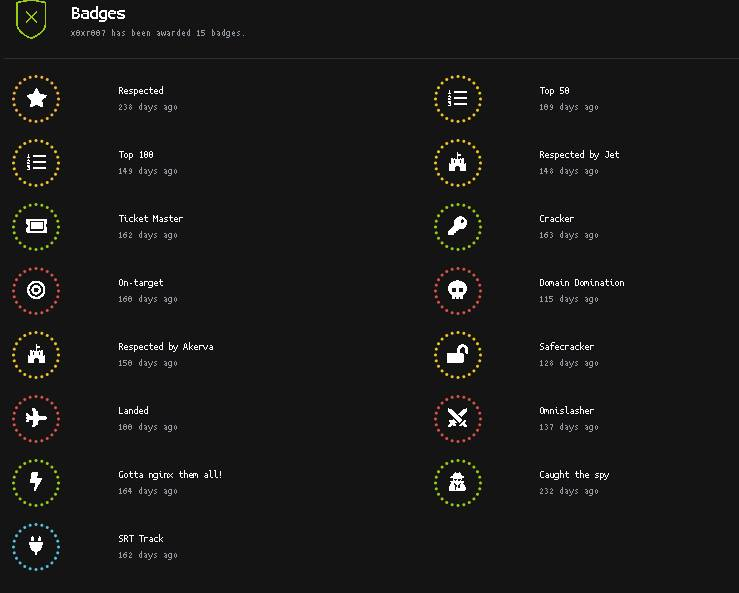

Professional Profile
Known in the security community as x0xr00t, Patrick Hoogeveen works across offensive security, vulnerability research, and security-tool development. His work centers on understanding how systems fail, validating security assumptions, and turning technical findings into actionable improvements.
Patrick Hoogeveen is an independent security researcher and Red Team Specialist known professionally as x0xr00t. His work spans authorized red-team operations, web and network penetration testing, Windows security research, vulnerability analysis, privilege-boundary assessment, security automation, and open-source tool engineering. He approaches security as a practical discipline: understand the implementation, test the security assumptions, document evidence, and turn findings into improvements that can be verified.
His research interests include Windows internals and defensive controls, privilege escalation, application and network attack surfaces, vulnerability reproduction, and the engineering of tools for repeatable assessment and defensive validation. Alongside hands-on research, he shares technical knowledge through documentation, research writing, and projects published under the x0xr00t and Team Sl0ppyr00t names.
Research Identity & Alias History
s3ns31 · 2008–2017
Previously known as s3ns31. This period represents the earlier chapter of Patrick Hoogeveen's technical identity and independent security interests. The alias predates the x0xr00t identity and is included here to connect the historical name with the current professional profile.Sensie is formarirly known in the prime days of hacktivism.
x0xr00t · Current identity
Under the x0xr00t name, Patrick focuses on red-team research, security tooling, Windows security analysis, responsible disclosure, and practical engineering. Team Sl0ppyr00t is the project and community label associated with a number of his tools.
Historical alias dates are presented as supplied by the profile owner.
Core Specializations
Red Teaming & Penetration Testing
Assessing attack surfaces, validating security controls, and identifying exploitable weaknesses within authorized scopes.
Windows Security Research
Investigating Windows internals, privilege boundaries, application behavior, and defensive-control effectiveness.
Vulnerability Research
Reproducing security issues, analyzing root causes, developing proof-of-concept tests, and documenting impact and mitigations.
Security Automation
Building practical tools for reconnaissance, validation, triage, and repeatable assessment workflows.
Defensive Validation
Evaluating detection and hardening measures to help teams improve coverage, reduce blind spots, and verify remediation.
Technical Communication
Sharing findings and lessons learned through research notes, articles, documentation, and open-source repositories.
Engineering & Tooling
Tool selection depends on the problem being investigated. The following languages and technologies are relevant to different parts of security research and engineering; specific experience should be assessed against the requirements of each project.
| Technology | Common applications |
|---|
| Bash / Shell | Linux administration, repeatable workflows, host triage, and operational automation. |
| Python | Assessment automation, scanners, data processing, test harnesses, and security tooling. |
| Ruby | Security automation, custom testing scripts, and modules for established security frameworks such as Metasploit. |
| PowerShell | Windows administration, configuration review, system triage, and authorized security validation. |
| Go | Portable command-line utilities, concurrent network tools, and self-contained assessment binaries. |
| C / C++ | System-level analysis, memory-safety research, operating-system interfaces, and performance-sensitive utilities. |
| Perl | Automation, text processing, and maintenance of established security scripts. |
| JavaScript / PHP / Java | Web and application security analysis, backend review, and platform-specific tooling. |
| Rust / C# / Assembly | Systems programming, Windows-focused tooling, and low-level analysis where appropriate. |
| HTML / CSS | Web interfaces, documentation, reporting views, and presentation of technical findings. |
Examples describe typical uses of each technology, not a claim that every listed technique or tool is part of a publicly released project.
Professional Experience & Development
Red Team Operator & Security Researcher
Synack Red Team · July 2021–present · Part-time
Authorized security testing and research across scoped customer environments, with an emphasis on careful validation, evidence-led reporting, and actionable findings.
Security Researcher & Technical Writer
undisclosed ·2023–present · undisclosed
Security research, technical articles, 0day dev, malware dev. and knowledge sharing focused on practical offensive security and vulnerability analysis.
Security Researcher & Technical Writer Red team opperator
SecJuice · July 2021–2023 · Part-time
Security research, technical articles, and knowledge sharing focused on practical offensive security and vulnerability analysis.
Independent Security Consultant,Red team opperator, Security researcher.
2018–2020
Ired team assesments, 0day dev, malware dev, custom tooling dev, custom encoders, custom packers. amongst with the clientel advisiry & assesmenets.
Imdepemded Security Consultant, Red team opperator, Security researcher.
2017–2018
red team assesments, 0day dev, malware dev, custom tooling dev, custom encoders, custom packers. amongst with the clientel advisiry & assesmenets.
Security consultant
2012–2016
red team assesments, 0day dev, malware dev, custom tooling dev, custom encoders, custom packers. amongst with the clientel advisiry & assesmenets.
Infrastructure & Hosting
2010–2016
Hands-on work with hosting environments, server racks, VMware ESXi, databases, content-management systems, and cloud storage configurations.
hacktivism in its prime days
2010–2016
known as s3ns31.... the name might ring a bell or thousands in ur edrs. LOL
Education & Professional Development
- CEH training/certification pathway — 2012; CEH v10 — 2019.
- Hack The Box SRT Track — 2021; UEH — 2022.
- Continued independent study, practical labs, security research, and professional development.
Dates and qualifications are reproduced from the profile owner's supplied background and should be aligned with current CV documentation before formal submission.
Research, Labs & Continuous Improvement
Hands-on platforms such as Hack The Box provide a structured environment for developing practical skills in enumeration, exploitation, privilege-boundary analysis, and problem solving. Competitive rankings can change over time, so any leaderboard position should be presented with a date and supporting profile evidence.
Security research is most valuable when findings are reproducible, impact is clearly explained, and remediation guidance is practical.
Research into Windows security and defensive controls includes examining how implementation details can affect security boundaries and how those behaviors can be tested responsibly. Public write-ups and proof-of-concept material should include scope, affected versions, prerequisites, observed behavior, and mitigation notes wherever possible.

Selected Open-Source Projects
Public repositories focus on security assessment, Windows security research, scanning, defensive validation, and automation. Each project should be evaluated using its own documentation, release notes, and stated limitations.
Windows UAC research and testing utilities.
Privilege-escalation research and task-related assessment tooling.
Open-source security tooling and research utilities.
Security research project and proof-of-concept tooling.
Proof-of-concept material associated with a file-path traversal research report.
SVG-focused scanning and analysis.
Security tooling and assessment automation.
Windows shortcut (LNK) inspection and research.
Windows defensive-control research and validation.
Go-based security tooling.
PHP-related security scanning and testing.
CVE-focused scanning and vulnerability research.
Read-only UEFI and firmware assessment.
Suricata IDS/IPS monitoring and dashboard tooling.
Recognition, Rankings & Hall of Fame
Recognition and ranking milestones associated with Patrick Hoogeveen's security research and community participation.
KPN Hall of Fame
Hall of Fame recognition connected to vulnerability research and responsible reporting to KPN, including a KPN Hall of Fame 2023 reference.
Microsoft Security Response Center (MSRC)
MSRC researcher recognition, including an acknowledgement associated with Windows User Account Control (UAC) bypass research.
Hack The Box · Top 50
Reported historical Top 50 global ranking, following progress from around rank 200 into the Top 100 and then the Top 50. This is a historical achievement, not a claim about the current live leaderboard.
GitHub · Top 1%
Reported placement among the top 1% of repositories. The exact metric, category, period, and supporting public evidence should accompany this claim wherever possible.
HackerDNA · Top 8
Reported Top 8 placement on HackerDNA.
HackerDNA · Netherlands Top 5
Reported Top 5 ranking in the Netherlands on HackerDNA.
Additional community recognition
Other supplied milestones include HTB Hall of Fame 2020, Synack Red Team Honored Researcher recognition (2022–2024), and KPN security acknowledgements.

Rankings may change and some platforms use different scoring windows. For public use, add direct profile links, dates, screenshots, or official acknowledgements for each item. The claims above reflect information supplied for this biography and have not been independently verified in this document.
Research Principles
Authorization & Scope
Testing should be performed with explicit permission and within the agreed scope, with care taken to minimize disruption and unintended impact.
Evidence First
Findings should be supported by reproducible observations, clear confidence levels, and a distinction between confirmed issues and hypotheses.
Responsible Reporting
When a vulnerability affects a third party, coordinate disclosure appropriately and provide enough technical detail to support remediation.
Defensive Outcomes
The objective is to help organizations understand risk, strengthen controls, and verify that fixes address the underlying cause.
About x0xr00t
Patrick Hoogeveen previously known as s3ns31 (2008–2017), now known as x0xr00t brings a hands-on approach to red-team assessment, vulnerability research, Windows security analysis, and open-source tool development. Under Team Sl0ppyr00t, he aims to make research reproducible, communicate risk clearly, and help turn technical findings into measurable security improvements.